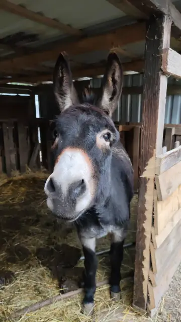

Péče, ne boj
Žádné zbraně, žádné násilí. Lišku si trpělivostí a večerní miskou skamarádíš. Káně vyřešíš úkrytem, ne bojem. Každé setkání končí dobře — a s ponaučením.
Ve vývoji · předběžný přístup
Útulná, ale poctivě náročná hra o péči o víc než sto zachráněných zvířat na louce uprostřed lesů. Jeden den je jeden level. Nakrm, ukliď, navař, zavři zvířata před liškou — a přežij zimu. Postavy i příběhy vycházejí ze skutečného azylu Nech mě růst.
Co Louku dělá Loukou
Roztomilé zvenčí, ale řídíš skutečné hospodářství azylu. Spokojená zvířata = dary od příznivců. Zanedbaná = veterinář a ztráty. Bankrot = konec.
Žádné zbraně, žádné násilí. Lišku si trpělivostí a večerní miskou skamarádíš. Káně vyřešíš úkrytem, ne bojem. Každé setkání končí dobře — a s ponaučením.
Ráno vypustit a nakrmit, v poledne uklidit a vyrábět, večer zavřít zvířata před lesem. Pak spát → další den. Roční období se střídají a mění pravidla.
Top-down louka ve stylu Pokémon a Zoo Tycoon. Statek, bylinná louka, rybník a hájek propojené cestami lesem. Mini-mapa, minihry, hlavolamy, lidé s vlastními příběhy.
Hlídej i vlastní energii, sytost a žízeň. Nakoseš a svezeš seno, naštípeš dřevo, zatopíš. Kratší dny, víc krmení. Zima nekompromisně prověří, jak dobrý jsi hospodář.
Jeden den = jeden level
Vypustíš drůbež z kurníku, projdeš po miskách — drůbež, prasata, stádo i mazlíčky — a naplníš je krmivem a vodou. Cestou sesbíráš vejce. Kdo se ráno nenají, ten do večera zeslábne.
Úklid výběhů, štípání dřeva, rozdělání ohně a sběr bylin. V dílně vyrobíš řebříčkovou mast, čaj nebo vařené krmivo, ostříháš vlnu. Přebytky prodáš ve stánku a nakoupíš, co dojde.
Dokrmíš, doplníš vodu a hlavně zavřeš zvířata — v noci obchází louku liška. Zkontroluješ vlastní síly a jdeš spát. Ráno začíná nový den, možná už v jiném ročním období.
Ťukni na fázi — scéna vlevo i celá stránka změní světlo. Přesně tak plyne den ve hře.
Čtyři kapitoly roku
Stříhání vlny, první byliny, rozkvetlá permakulturní zahrada. Louka ožívá.
Kosení, sušení a svoz sena — závod s počasím o zásoby na zimu. Dlouhé dny, plno práce.
Sklizeň, zavařování, poslední přípravy. Dny se krátí, les je blíž a hlasitější.
Víc krmení, topení dřevem, kratší dny. Nejtěžší zkouška — a nejkrásnější ticho.
Skuteční obyvatelé
Každé zvíře na Louce žilo nebo žije doopravdy — s vlastní povahou i osudem. Ve hře je najdeš podle skutečných fotek i sprity podle reálných předloh. Vyber si a poznej je.
Prozkoumatelný svět
Chodíš postavou po světě — šipky nebo WASD na klávesnici, křížové ovládání na mobilu. Ťukni na místo na mapě.
Naučí tě štípat dřevo na čas. Minihra o rytmu a přesnosti.
Poznávání bylin. Naučná minihra, po které začneš vyrábět lék z Louky.
Pexeso s obyvateli Louky. Za odměnu dovednosti i vylepšení statku.
Pod kapotou
Vrstvená syntéza běží celá v prohlížeči — melodie, bas, pad a perkuse se skládají podle situace. Útěk zvířete spustí „heartbeat“, poplach přidá hnací rytmus, blížící se zima hudbu postupně ztmavuje. Žádné zvukové soubory, jen živý Web Audio.
Studna, seník, automatické krmítko, sušárna bylin, permakulturní zahrada — každé vylepšení ti ulehčí práci nebo zlevní provoz.
Řebříčková mast, čaj, vařené krmivo, ostříhaná vlna. Suroviny sbíráš po louce a v lese.
Péčí, úklidem a sběrem bylin objevuješ přes 50 ověřených faktů o přírodě a zvířatech. Hraješ se a učíš se.
Liška, káně, ježek, srnka. Nikdo nikomu neublíží — questové linky vedou od strachu k přátelství.
Není to jen hra
Louka vychází ze skutečného azylu Nech mě růst z.s. Karel, Princezna, Flíček, Avala, Květa i desítky dalších tu doopravdy dožívají v klidu — není to farma na porážku. Hra převádí jejich příběhy do herní podoby s úctou a s reálnými fotkami.
A zásadní věc: koupí plné hry podpoříš ten skutečný azyl. Hraní tak není únik od světa — je to malá pomoc jemu.

Hra se stále vyvíjí
Stavíme ji poctivě, kus po kuse. Tady je, kde jsme a kam míříme.
Chodící postava, denní cyklus, přes sto zvířat, ekonomika, výroba, adaptivní hudba.
Demo zdarma (tutoriál a první dny) a plná hra na Google Play. Ladíme výkon i nativní zážitek.
Kompletní příběhové linky, sezónní události, sena, svátky a další obyvatelé.
Další platformy, jazyky a foto-aktualizace, jak azyl roste. Hra poroste s ním.
Vyzkoušej, pak podpoř
Demo
Zdarma
Tutoriál a první dny na Louce
Podpoří skutečný azyl
Louka — plná hra
299 Kč jednorázově
Celý rok na Louce — natrvalo
Časté dotazy
Ano. Nejsou zbraně ani boj. Lišku si skamarádíš trpělivostí, káně vyřešíš úkrytem. Každé setkání s divokým sousedem končí dobře a s ponaučením.
Pro všechny, kdo mají rádi útulné hry se srdcem, ale nebojí se výzvy. Vhodná i pro děti — zároveň má poctivou ekonomiku a survival hloubku pro dospělé.
V předběžném přístupu na Androidu přes Google Play (demo zdarma i plná hra). Hra běží i v prohlížeči — připravujeme další platformy.
Ano. Jména, povahy i fotky vycházejí ze skutečných obyvatel azylu Nech mě růst z.s. Sprity jsou kreslené podle reálných předloh.
Celý herní rok, kompletní příběh a všechny questové linky — natrvalo a bez reklam. Nákup je zároveň skutečnou podporou azylu.